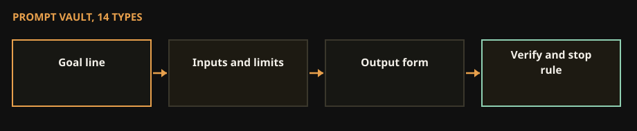
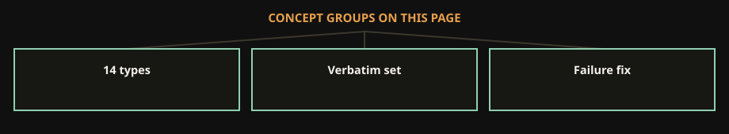

Prompt Vault, 14 types
Each prompt type holds six fields, a copy ready template, and a sample form. Verbatim prompts from named users carry source rows. All other text forms a pattern, never a quote.

Repository orientation
| Field | Value |
|---|---|
| Purpose | Map an unknown repo fast. |
| Required inputs | Repo path, goal of the tour |
| Constraints | No edit acts. Facts only, with file paths. |
| Output format | Map: entry points, core modules, test commands, risk areas. |
| Verification | Open three named files. Paths must exist. |
| Stop conditions | Stop at a full map or at 20 files read. |
Template
Goal: [one outcome] Inputs: [list files, sources, or data] Constraints: [limits, rights, areas to avoid] Output: [exact form] Verify: [test, check, or proof step] Stop: [pass rule, round cap, or block rule] Report gaps as: Not in source.
Filled sample
Goal: map labs/lab1. Inputs: service.py and test_service.py. Output in the run: entry class TaskService, three methods, test command python3 -m pytest -q. Risk area named: page slice math.
Specification and acceptance
| Field | Value |
|---|---|
| Purpose | Turn a wish into a testable spec. |
| Required inputs | Goal, user, limits, samples |
| Constraints | One sense per term. No new features past the goal. |
| Output format | Spec with numbered pass rules. |
| Verification | Each rule maps to a test or a check a human can run. |
| Stop conditions | Stop when each goal part has one pass rule. |
Template
Goal: [one outcome] Inputs: [list files, sources, or data] Constraints: [limits, rights, areas to avoid] Output: [exact form] Verify: [test, check, or proof step] Stop: [pass rule, round cap, or block rule] Report gaps as: Not in source.
Filled sample
Goal: priority filter for Lab 1. Pass rules: high filter returns ids 5, 10, 15, 20, 25 on the seed set; page rules hold under a filter. Both rules map to tests in Lab 1.
Architecture comparison
| Field | Value |
|---|---|
| Purpose | Pick a design with evidence. |
| Required inputs | Spec, two or three options, limits |
| Constraints | Score on set axes only. Name trade offs. |
| Output format | Table of options, scores, one pick with a reason. |
| Verification | Check each score cites a fact or a test. |
| Stop conditions | Stop at one pick or at a named open question. |
Template
Goal: [one outcome] Inputs: [list files, sources, or data] Constraints: [limits, rights, areas to avoid] Output: [exact form] Verify: [test, check, or proof step] Stop: [pass rule, round cap, or block rule] Report gaps as: Not in source.
Filled sample
Options for Lab 2 score method: keyword count vs TF-IDF cosine. Axes: accuracy at k of 5, run time, code size. Pick rule set in advance: a win needs a split past 0.02 on precision. Result: no split, no pick.
Implementation
| Field | Value |
|---|---|
| Purpose | Build to a spec in small steps. |
| Required inputs | Spec, plan, repo map |
| Constraints | Edit named areas only. Run tests per step. |
| Output format | Code plus a step log. |
| Verification | Test output per step sits in the log. |
| Stop conditions | Stop at spec pass or at a block with proof. |
Template
Goal: [one outcome] Inputs: [list files, sources, or data] Constraints: [limits, rights, areas to avoid] Output: [exact form] Verify: [test, check, or proof step] Stop: [pass rule, round cap, or block rule] Report gaps as: Not in source.
Filled sample
Goal: fix the page slice in Lab 1. Step log: write fail test, run and record fail, change start math to page minus one times per_page, run full set, record 5 passed.
Debugging from evidence
| Field | Value |
|---|---|
| Purpose | Fix a bug from proof, not a guess. |
| Required inputs | Error text, logs, fail test, recent diff |
| Constraints | No fix with no reproduce step first. |
| Output format | Root cause, one fix, regression test. |
| Verification | Fail test passes, full set passes. |
| Stop conditions | Stop at pass or at two failed fix rounds, then replan. |
Template
Goal: [one outcome] Inputs: [list files, sources, or data] Constraints: [limits, rights, areas to avoid] Output: [exact form] Verify: [test, check, or proof step] Stop: [pass rule, round cap, or block rule] Report gaps as: Not in source.
Filled sample
Evidence: test_first_page_has_first_items fails, page one returns ids 11 to 20. Reproduce step: one test run. Root cause: start equals page times per_page. Fix: one line. Regression test: the same test, now green.
Test design
| Field | Value |
|---|---|
| Purpose | Write tests that can fail. |
| Required inputs | Spec, code under test, edge list |
| Constraints | Tests must name exact values. No tautology tests. |
| Output format | Test file plus a case table. |
| Verification | Each pass rule has one test at least. |
| Stop conditions | Stop when each rule maps to a test. |
Template
Goal: [one outcome] Inputs: [list files, sources, or data] Constraints: [limits, rights, areas to avoid] Output: [exact form] Verify: [test, check, or proof step] Stop: [pass rule, round cap, or block rule] Report gaps as: Not in source.
Filled sample
Case table for Lab 1: page one exact ids, page two exact ids, filter exact ids, filter plus page count and type check, complete act on a real id and on id 999.
Code review
| Field | Value |
|---|---|
| Purpose | Find defects in a diff. |
| Required inputs | Diff, spec, test output |
| Constraints | Report defects only, with file and line. No style nits as defects. |
| Output format | Defect list by severity, each with a proof step. |
| Verification | Re run one proof step per top defect. |
| Stop conditions | Stop at a full diff read. |
Template
Goal: [one outcome] Inputs: [list files, sources, or data] Constraints: [limits, rights, areas to avoid] Output: [exact form] Verify: [test, check, or proof step] Stop: [pass rule, round cap, or block rule] Report gaps as: Not in source.
Filled sample
Diff under review: one line in list_tasks. Defect check: filter runs before slice, so page math uses the filtered list. Proof step: test_filter_and_page passes with count 10 and all rows at normal priority.
Research synthesis
| Field | Value |
|---|---|
| Purpose | Join sources into claims with types. |
| Required inputs | Question, source set, ledger form |
| Constraints | Split claim types. One origin per press cycle. |
| Output format | Synthesis with claim rows and splits named. |
| Verification | Each claim row links to a source row. |
| Stop conditions | Stop at source set end or at two passes with no new claim. |
Template
Goal: [one outcome] Inputs: [list files, sources, or data] Constraints: [limits, rights, areas to avoid] Output: [exact form] Verify: [test, check, or proof step] Stop: [pass rule, round cap, or block rule] Report gaps as: Not in source.
Filled sample
Question: what do power users do that regular users do not? Claim rows: fleets, harness, oracles, fresh review, compounding corrections. Split named: Poteto counts conflict across rows 51 to 53, so no count enters the synthesis as a fact.
Experiment design
| Field | Value |
|---|---|
| Purpose | Design a test that can prove a view wrong. |
| Required inputs | Claim, baseline, data access |
| Constraints | One main factor per run. Pass rule set before a run. |
| Output format | Design doc: inputs, runs, metrics, stop rule. |
| Verification | A rival result must be possible in the design. |
| Stop conditions | Stop when a disproof path exists in the plan. |
Template
Goal: [one outcome] Inputs: [list files, sources, or data] Constraints: [limits, rights, areas to avoid] Output: [exact form] Verify: [test, check, or proof step] Stop: [pass rule, round cap, or block rule] Report gaps as: Not in source.
Filled sample
Claim: TF-IDF beats keyword count. Baseline: keyword count. One factor: score method. Pass rule: precision split past 0.02 at k of 5 over 3 repeats. Disproof path: equal scores kill the claim. Result in Lab 2: claim killed.
Evaluation and error analysis
| Field | Value |
|---|---|
| Purpose | Score runs and sort errors. |
| Required inputs | Eval set, run outputs, score rule |
| Constraints | Sort errors by type before a fix. Count, do not sample by feel. |
| Output format | Score table plus error type counts. |
| Verification | Re score five samples by hand. Counts must match. |
| Stop conditions | Stop at a full set scored. |
Template
Goal: [one outcome] Inputs: [list files, sources, or data] Constraints: [limits, rights, areas to avoid] Output: [exact form] Verify: [test, check, or proof step] Stop: [pass rule, round cap, or block rule] Report gaps as: Not in source.
Filled sample
Eval set: Lab 2 queries, 20 in total. Score rule: precision at 5 per topic. Error sort: no errors to sort, both methods at 1.0. Error type found at design level: ceiling effect in corpus design.
Business research
| Field | Value |
|---|---|
| Purpose | Build a cited market or lead report. |
| Required inputs | Scope, source list, claim rule |
| Constraints | Each claim needs a link and a date. No send acts. |
| Output format | Report draft with a review gate list. |
| Verification | Open five links at random. Each must support its claim. |
| Stop conditions | Stop at scope end. |
Template
Goal: [one outcome] Inputs: [list files, sources, or data] Constraints: [limits, rights, areas to avoid] Output: [exact form] Verify: [test, check, or proof step] Stop: [pass rule, round cap, or block rule] Report gaps as: Not in source.
Filled sample
Scope: Grok Bot business cases. Claim rule: each claim needs a link and a date. Draft rows: Sanchez finder and drafter pair, row 8, flagged Low. Gate list: all outcome numbers need a human check before use.
Agent delegation
| Field | Value |
|---|---|
| Purpose | Split work for child agents with no clash. |
| Required inputs | Goal graph, file ownership, pass rules |
| Constraints | One owner per file set. Child output form fixed. |
| Output format | Task cards with inputs, outputs and checks. |
| Verification | Each card names a verify step and a stop rule. |
| Stop conditions | Stop when each graph node has one card. |
Template
Goal: [one outcome] Inputs: [list files, sources, or data] Constraints: [limits, rights, areas to avoid] Output: [exact form] Verify: [test, check, or proof step] Stop: [pass rule, round cap, or block rule] Report gaps as: Not in source.
Filled sample
Goal graph for this site build: research branches in parallel, ledger join, build, verify, review. File ownership: one builder script per page set, reviewer edits no files. Stop rule per card: output file plus a check result.
Independent audit
| Field | Value |
|---|---|
| Purpose | Audit a draft vs raw evidence. |
| Required inputs | Draft, raw sources, requirement list |
| Constraints | Find unsupported claims first. No edit acts in audit round. |
| Output format | Defect list with claim, source state and fix form. |
| Verification | Each defect cites a page line and a source row. |
| Stop conditions | Stop at a full draft read. |
Template
Goal: [one outcome] Inputs: [list files, sources, or data] Constraints: [limits, rights, areas to avoid] Output: [exact form] Verify: [test, check, or proof step] Stop: [pass rule, round cap, or block rule] Report gaps as: Not in source.
Filled sample
Draft: this site. Raw evidence: report ledger rows 1 to 60. Defect sample from pass 2: convergence span text said four products in seven weeks; dates show three in seven weeks plus one earlier variant. Fix form applied on the Home page.
Session handoff and recovery
| Field | Value |
|---|---|
| Purpose | End a session so a fresh agent can resume. |
| Required inputs | State log, decisions, open points, next acts |
| Constraints | Facts only. No new plans in a handoff. |
| Output format | Handoff note with state, proof links and next act one. |
| Verification | A fresh reader can name the next act in one pass. |
| Stop conditions | Stop at one next act named first. |
Template
Goal: [one outcome] Inputs: [list files, sources, or data] Constraints: [limits, rights, areas to avoid] Output: [exact form] Verify: [test, check, or proof step] Stop: [pass rule, round cap, or block rule] Report gaps as: Not in source.
Filled sample
State: v2 site built, 20 pages, links clean. Decisions: Muse equals Meta, Lab 2 claims no win. Open point: exact Claude Code patch. Next act one: push v2 files to branch build/power-user-hub-v1 and verify the remote tree.
Verbatim prompts, sourced
- Verbatim
Grill me on these changes and don't make a PR until I pass your test.Cherny team thread transcript, sources row 18. - Verbatim
Prove to me this worksSame source. - Verbatim
Knowing everything you know now, scrap this and implement the elegant solution.Same source. - Verbatim
Update your CLAUDE.md so you don't make that mistake again.Same source. - Verbatim
@codex review for security regressionsCodex command form, row 34. - Verbatim
Use a workflow to review this service. Have separate agents inspect the API design, security boundaries, and test coverage. Verify the findings, then return one prioritized report.Muse Code docs sample, row 41.
One prompt failure and a repair
Failure form: a prompt asks for a full build with no verify step. Output looks full and hides defects. Repair: add one verify line with a test the agent cannot edit, plus a stop rule. Lab 2 shows the same trap in benchmark form: a test with no split power proves no win.
Verbatim prompts from named users
Four Cherny team lines, Codex review commands and one Muse Code workflow prompt sit in v1 form in git history for this file and in full on the Claude, Codex and Muse pages workflow steps. Verbatim text in this site carries a source row on the Sources page: rows 18, 34 and 41.

Visual map of this page
Three views of one page: a Mermaid flow for work order, a markmap for concept groups, and a read guide for the flow.
Mermaid source, for offline read
flowchart LR A[Purpose] --> B[Required inputs] B --> C[Constraints] C --> D[Output form] D --> E[Verification] E --> F[Stop rule]
How to read the flow diagram. Step 1: start at the left box. Step 2: follow each arrow to the next stage. Step 3: at a branch box, read both paths before a choice. Step 4: a loop arrow means work returns for one more pass vs a test.
Markmap: concepts on this page
- Prompt Vault, 14 types
- 14 types
- Orientation and spec
- Build and debug
- Review and audit
- Research and eval
- Business and handoff
- Verbatim set
- Cherny lines, row 18
- Codex commands, row 34
- Muse Code sample, row 41
- Failure fix
- No verify line hides defects
- Add an oracle and a cap
- 14 types